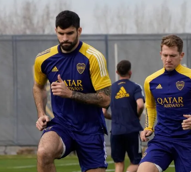

Cómo el Equipo se Prepara para Ganar
La preparación para una temporada ganadora comienza con un entrenamiento físico y mental riguroso. Cada jugador pasa por una serie de pruebas físicas diseñadas para medir su resistencia, fuerza y velocidad. Además, el equipo técnico desarrolla un plan de entrenamiento personalizado para cada jugador, asegurando que estén en la mejor forma posible para enfrentar la competencia.
Entrenamientos Tácticos
Los entrenamientos tácticos son una parte crucial de la preparación. Cada semana, el cuerpo técnico trabaja con los jugadores para perfeccionar las jugadas y estrategias que se usarán en los próximos partidos. Se analizan los puntos fuertes y débiles de los rivales, y se desarrollan tácticas específicas para maximizar las posibilidades de victoria.
Condición Física
La preparación física es intensa y está orientada a mejorar la resistencia cardiovascular, la fuerza muscular y la agilidad. Los jugadores pasan por sesiones de entrenamiento en el gimnasio, carreras de alta intensidad y ejercicios específicos para mejorar la movilidad y la flexibilidad.
Preparación Mental
No todo se trata de la preparación física. El equipo también cuenta con sesiones de coaching mental, donde se trabaja la concentración, la resiliencia y la motivación. Estas sesiones son vitales para enfrentar la presión de los partidos importantes y mantener la calma en momentos críticos.
Dietas Especializadas
La nutrición es una parte esencial del éxito en el deporte profesional. Cada jugador sigue una dieta específica diseñada para maximizar su rendimiento. Se incluyen alimentos ricos en proteínas, carbohidratos complejos y grasas saludables para asegurar una recuperación óptima tras los entrenamientos.